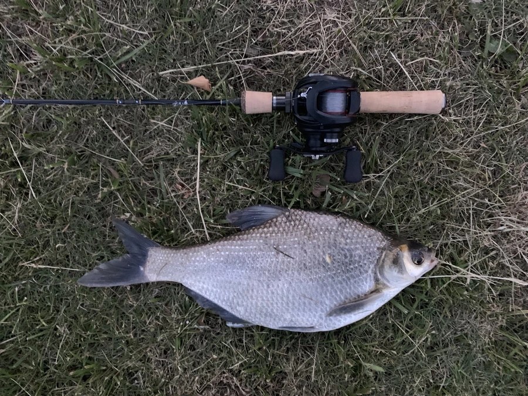

鱼类 · 动物界
团头鲂 Megalobrama amblycephala

原产湖北梁子湖等长江中游湖泊的淡水鱼，头小、体侧扁呈菱形，肉质细嫩，“武昌鱼”正是它的别名。
- 分类
- 门脊索动物门纲硬骨鱼纲目鲤形目科鲤科属鲂属
- 栖息环境
- 长江中游湖泊及各地养殖水体，喜静水、水草丰茂的浅水区
- 地理分布
- 原产中国长江中游湖泊，如湖北梁子湖，现全国多地养殖
- 保护级别
- 暂无评估；中国未列入国家重点保护野生动物名录（重要养殖鱼类）
物种志
团头鲂体侧扁、呈菱形，背部隆起，头小，吻部钝圆，口端位，没有须。体色灰黑，体侧银灰，腹部灰白，各鳍灰黑色。成鱼体长一般 30–40 cm，体重 0.5–1.5 kg，最大约 3 kg。与鳊鱼相比，团头鲂的背部更高、体形更宽，这是区分两种鱼的重要特征。
团头鲂原产中国长江中游的湖泊，如湖北的梁子湖和东湖，生活在湖泊和江河的中下层，喜欢静水和水草丰茂的环境。它是草食性鱼类，以水生植物、藻类和植物碎屑为主，也吃浮游动物。繁殖期在 5–6 月，卵带黏性，会黏在水草上孵化，这与产漂流性卵的鳊鱼不同。20 世纪 50 年代起团头鲂被推广到全国各地养殖，如今是重要的经济鱼类。它的别名“武昌鱼”因毛泽东“才饮长沙水，又食武昌鱼”的诗句而广为人知。目前它没有IUCN 的正式评估，中国未将其列入国家重点保护野生动物名录。
形态与习性
- 食性草食性，以水生植物、藻类和植物碎屑为主
- 体长一般 30–40 cm
- 体重常见 0.5–1.5 kg，最大约 3 kg
- 繁殖5–6 月产卵，卵带黏性，黏附在水草上孵化
- 分布原产长江中游湖泊，20 世纪 50 年代起推广全国养殖
- 寿命约 8–10 年
趣味知识
- 团头鲂就是“武昌鱼”，因“才饮长沙水，又食武昌鱼”的诗句而闻名。
- 它的卵带黏性，会黏在水草上孵化，与产漂流性卵的鳊鱼不同。
- 团头鲂原产长江中游的湖泊，20 世纪 50 年代后被推广到全国各地养殖。